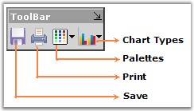
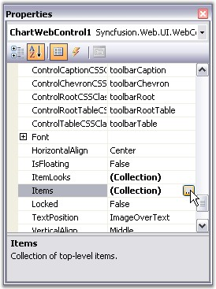
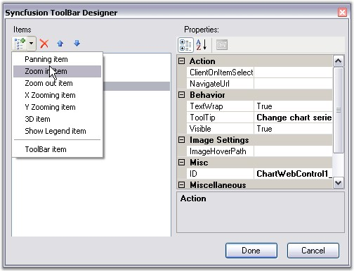
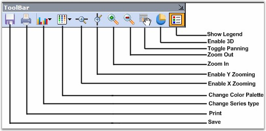

Essential Charts comes with a built-in toolbar that can be made visible to enable the user to do the following during runtime.
· Save the chart as an image.
· Copy the image to clipboard.
· Print the chart.
· Print Preview of the Chart.
· Change the color palette of the chart.
· Affects the style of the chart.
· Change the Chart Type.
· Toggle 3D style of the Chart.
· Toggle Legend Appearance.
The toolbar can be made visible through the Chart's ShowToolbar property.
The toolbar looks like the following image.

Figure 286: Built-In Chart Toolbar
The toolbar commands and their functionalities are described below.
|
Chart toolbar Commands |
Description |
|
Save |
Using this command, user can save the chart to a specific location. |
|
|
This toolbar command is used to print the Chart. |
|
Palette |
Palette for the series can be chosen at run time using this command. All palette colors available in the designer will be available in this Palette option also. |
|
Chart Types |
Any chart type can be set for the chart at run time using this command. |
Custom Toolbar Commands
You can also add custom toolbar items to the default toolbar items through designer. Open the Toolbar Designer using the Items property of the toolbar as illustrated in the below image.

Figure 287: Opening Toolbar Designer through Toolbar.Items property in Properties Dialog Box
In the Syncfusion ToolBar Designer dialog, select the custom command that you want to add, using the drop-down at the top left corner of the dialog. Once you finish adding the required commands, click Done.

Figure 288: Adding Toolbar Commands
The custom commands are now added to the Chart Toolbar.

Figure 289: Custom Commands added to the Toolbar
See Also
 Toolbar
Appearance
Toolbar
Appearance